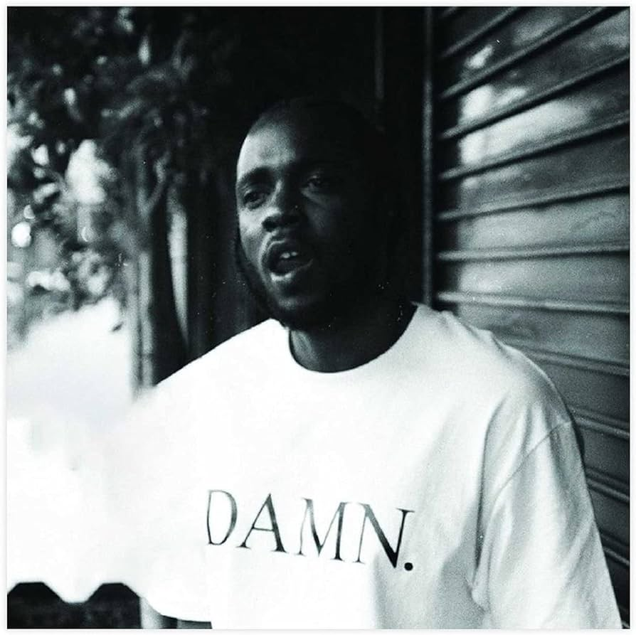

Kendrick Lamar is a Grammy-winning rapper and songwriter known for his introspective lyrics, social commentary, and innovative approach to hip-hop.
Hailing from Compton, California, Lamar has risen to prominence with critically acclaimed albums like "good kid, m.A.A.d city," "To Pimp a Butterfly," and "DAMN."
His music often explores themes of race, identity, and the complexities of modern society, earning him widespread acclaim as one of the most influential figures in contemporary rap music.
Beyond his commercial success, Lamar is celebrated for his storytelling prowess, lyrical dexterity, and commitment to pushing artistic boundaries within the genre.
To Pimp A Butterfly - 2015
"TPAB"
Or "To Pimp a Butterfly," is a critically acclaimed album by Kendrick Lamar,
released in 2015. It's a complex and deeply introspective work that explores themes of race, identity, and societal issues.
Through intricate lyricism and jazz-infused production, Lamar delves into his personal struggles with fame and self-worth while also addressing broader topics like institutional racism,
police brutality, and the African-American experience. The album received widespread praise for its artistic ambition, social commentary, and musical innovation,
cementing Lamar's reputation as one of the most important voices in contemporary hip-hop.
DAMN - 2017

"DAMN."
Is the fourth studio album by American rapper Kendrick Lamar, released in 2017. It's a compelling exploration of identity, spirituality, and the complexities of the modern African American experience.
Lamar's lyrical prowess shines through as he delves into themes of faith, resilience, and self-reflection over a diverse range of beats, from hard-hitting to more introspective.
The album received widespread critical acclaim for its thought-provoking content, intricate storytelling, and innovative production, solidifying Lamar's reputation as one of the most influential artists in contemporary hip-hop.